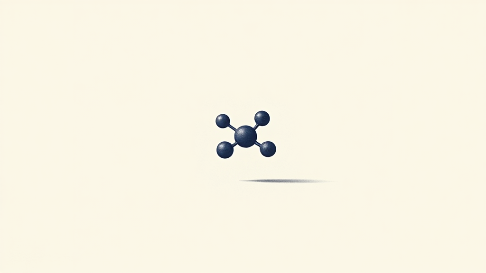
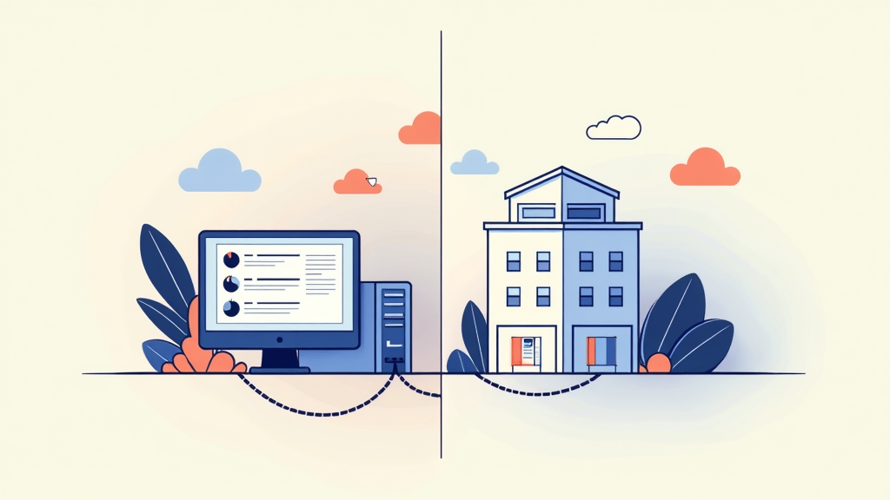
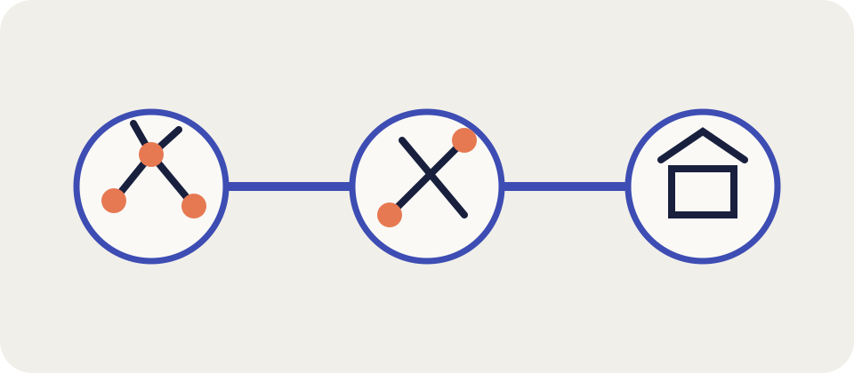
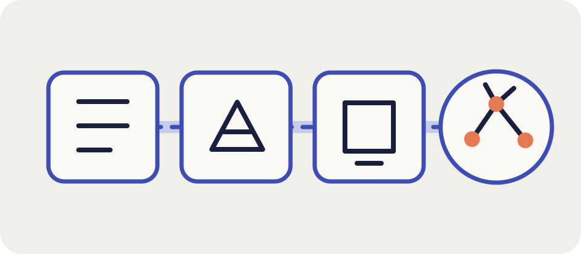
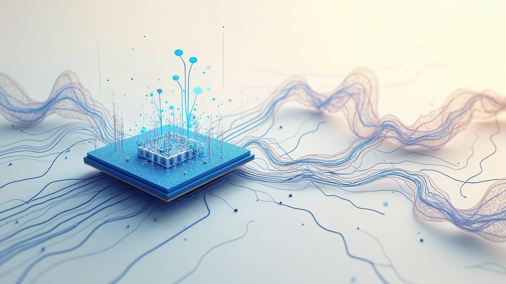

Why LUPI? · 01
A structure should open with the claim.
Rotate it. Measure it. Share it. No paywall, download, account, or command line between the data and the observer.

Browser-native · no install
LUPI.LIVE · LIVE MOLECULAR VIEWER
OPENING BELIEF
The problem · 02
Too heavy to share. Too simple to trust.
Desktop tools trap knowledge on one machine. Lightweight viewers can hide the coordinates, uncertainty, and context that make a structure meaningful.
but trapped
but opaque

The missing middle
SCREENSHOT CULTURE ≠ EXPLORATION
FIDELITY / ACCESS
The middle path · 03
Enough fidelity to inspect. Simple enough to travel.
Drop the same live structure into a paper, a slide, or a classroom. The data remains visible wherever the explanation goes.
One structure · many contexts
NO INSTALLATION · NO ACCOUNT
DATA / OBSERVER
Three jobs · 04
Inspection is a continuous act.
Render standard structures faithfully. Put distance, angle, and coordination one click away. Let every result move with a link.
Show
Measure
Share

Claim → inspection → link
STANDARD FORMATS · EXPOSED DATA
A CLICK AWAY
Verification layer · 05
The picture is only the front of the record.
Commitments, simulations, and certificates remain connected to the structure—an inspectable chain of makeability.

Formalized makeability record
COMMITMENTS → SIMULATIONS → CERTIFICATES
CHAIN OF TRUST
Why now · 06
Every generated structure needs a URL, not a filename.
Browser graphics are ready. Generative output is accelerating. Open science expects public, inspectable interfaces.

Three forces · one interface
PUBLIC · INSPECTABLE · ORDINARY DEVICES
THE INTERFACE FOR DISCOVERY

LUPI · LIVE MOLECULAR VIEWER
Walk up to a structure. Understand it in seconds.
VISIT LUPI.LIVE
TRY IT · BREAK IT · REPORT WHAT IS NEEDED